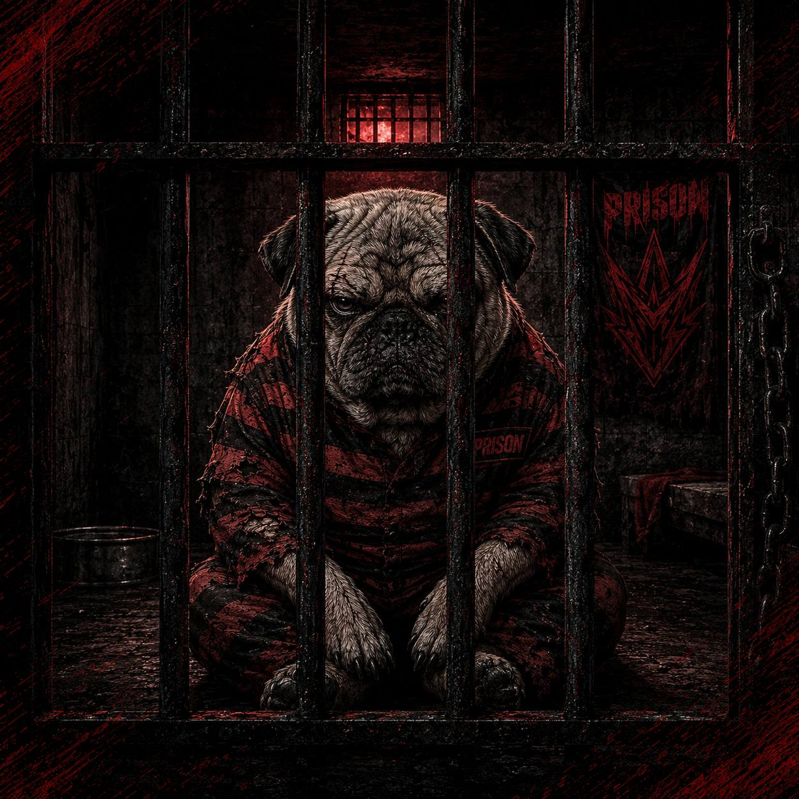
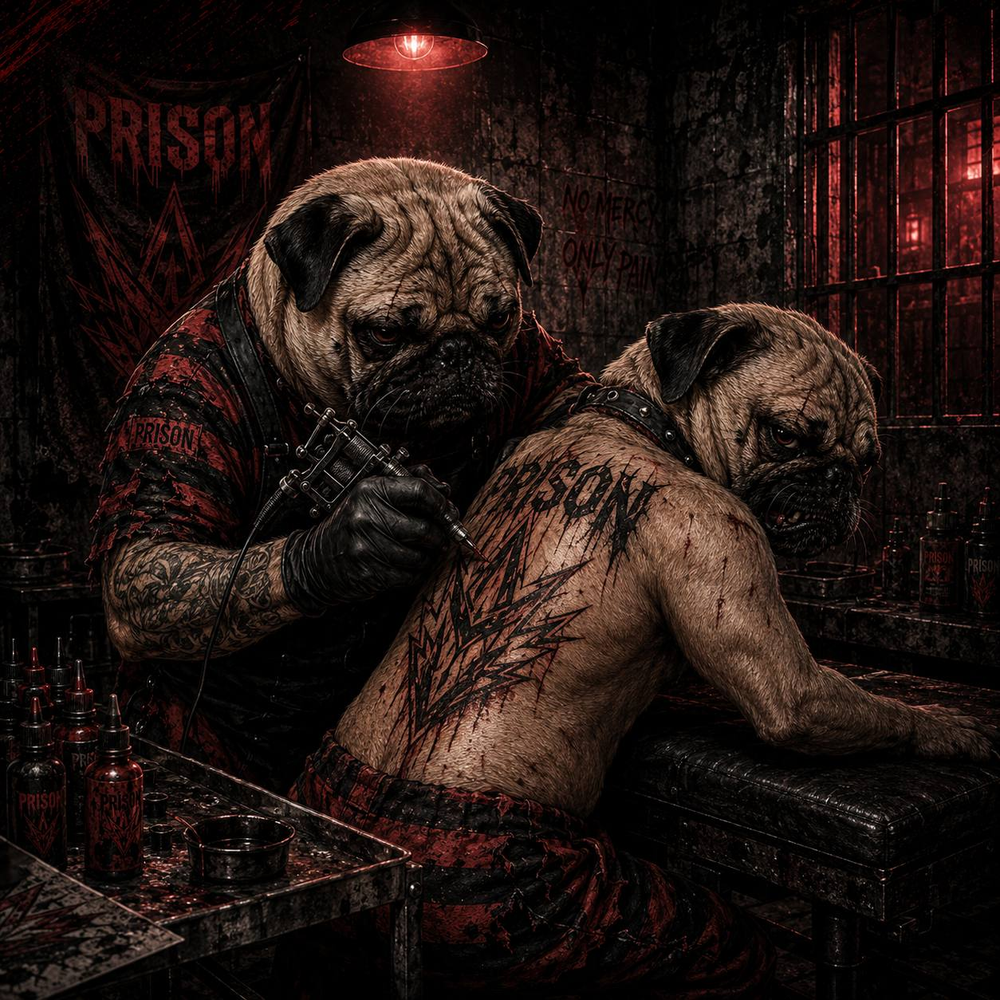
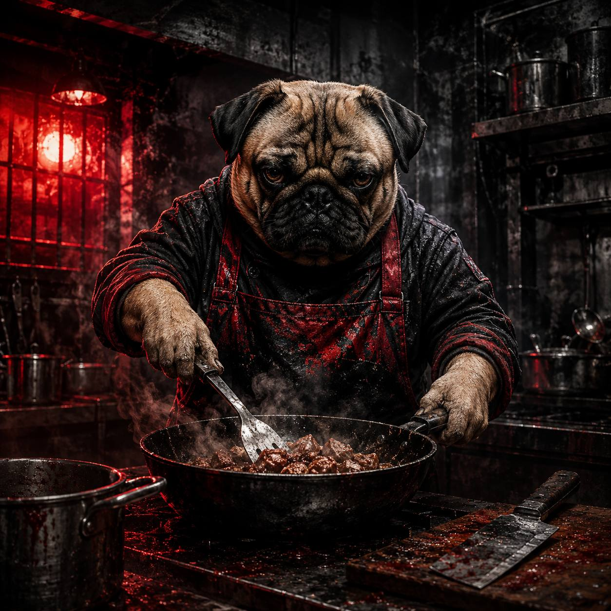

TOURNAMENT
ДОКАЖИ СВОЕ ПРЕВОСХОДСТВО!
Поднимайся в рейтинге, глубоко анализируй свои матчи и участвуй в турнирах от PRISON. Твой путь на профессиональную сцену начинается здесь.
💬 Наш Telegram-каналONLY VICTORY OFFICIAL WILD RIFT LEAGUE
О НАС
PRISON — это независимый игровой проект для сообщества League of Legends: Wild Rift, который объединяет игроков из разных гильдий в организованных, честных и сбалансированных матчах.
Мы создаём пространство, где важны не только победы, но и командная игра, уважение к соперникам, ответственность и желание развиваться.

ЧТО МЫ ДЕЛАЕМ
Мы организуем игровые мероприятия в форматах Bo3 и Bo5, проводим регистрацию участников и капитанов, формируем команды через капитанский драфт и следим за соблюдением общего регламента.
Каждому игроку присваивается собственный рейтинг. Он используется для более равномерного распределения участников и помогает капитанам формировать сбалансированные составы в рамках установленного бюджета.
По итогам матчей результаты фиксируются, а рейтинг игроков может изменяться с учётом их выступления, активности и поведения.
Наша цель — создать понятную и прозрачную систему, в которой каждый участник получает возможность:
- играть в организованных команды;
- находить новых тиммейтов и соперников;
- развивать индивидуальные и командные навыки;
- повышать свой рейтинг;
- участвовать в драфтах и игровых мероприятиях;
- проявить себя в соревновательной среде.
Мы выступаем против использования запрещённых программ, передачи аккаунтов, намеренного нарушения правил и любых действий, которые дают несправедливое преимущество.
Оскорбления, угрозы, травля, дискриминация, провокации и систематическая токсичность не являются частью здоровой среды. Мы ожидаем уважения к союзникам, соперникам, капитанам и администрации.
Команды формируются с учётом рейтинга участников и ограниченного бюджета капитанов. Это позволяет уменьшить разницу между составами и сделать матчи конкурентными.
Основные правила, система рейтинга, результаты игр, порядок подачи жалоб и решения администрации публикуются в открытом доступе.
Проект подходит как опытным игрокам, которые хотят проявить себя в организованных матчах, так и новым участникам, желающим получить игровой рейтинг, найти команду и развиваться внутри сообщества.
Для участия не обязательно приходить готовым составом. Можно зарегистрироваться как отдельный игрок и быть выбранным капитаном во время драфта.


ПОЛНЫЙ СВОД ПРАВИЛ И СИСТЕМА ВЫКУПА
Настоящее Положение устанавливает порядок присвоения и изменения рейтинга участников, правила формирования команд, применения ограничений, проведения официальных матчей и разрешения спорных ситуаций.
1.1. Балловая система применяется во внутренних кастомных играх и иных официальных мероприятиях проекта. Ее цель - обеспечить сопоставимую оценку игрового уровня участников и сбалансированное формирование команд.
1.2. Рейтинг участника определяется по результатам официальных матчей с учетом индивидуальной результативности, командного взаимодействия и поведения. Личная неприязнь, не относящаяся к проведению мероприятия, не может служить основанием для изменения рейтинга.
1.3. Рейтинг ведется по шкале от 1 до 10 баллов. Значение 10 является максимальным базовым рейтингом. Временное превышение данного значения допускается только в случаях, прямо предусмотренных пунктом 3 настоящего Положения.
| Диапазон рейтинга | Характеристика уровня |
|---|---|
| 1,0 – 5,0 | Базовый или средний уровень. Основные игровые навыки находятся в стадии развития. |
| 6,0 – 7,0 | Уровень выше среднего. Участник стабильно выполняет свою роль и влияет на результат команды. |
| 8,0 – 9,0 | Высокий уровень. Участник может быть ключевым игроком или капитаном команды. |
| 10,0 | Максимальный базовый уровень внутри действующей системы. |
2.1. Каждому участнику, допущенному к мероприятиям с применением балловой системы, присваивается индивидуальный рейтинг.
2.2. При отсутствии достаточных данных участнику присваивается временный технический рейтинг 2 балла. Он используется для первичного включения в реестр и не является окончательной оценкой уровня игрока.
2.3. Для установления постоянного рейтинга участник обращается к ответственному администратору и проходит краткое анкетирование либо оценочную игру. Упрощенная идентификация допускается для участников, игровой уровень которых достоверно известен администрации.
3.1. Победной серией (винстриком) признаются три последовательные победы участника в официальных матчах.
3.2. После третьей последовательной победы рейтинг участника автоматически увеличивается на 1 балл. Повышенный рейтинг применяется при формировании следующего мероприятия.
3.3. К участнику применяются ограничения, соответствующие его повышенному рейтингу: порядок выбора и уменьшение доступного количества очков — в соответствии с пунктами 5.1–5.2; надбавки к количеству очков — в соответствии с пунктами 5.4–5.5; требования к капитанской роли — в соответствии с пунктом 5.6.
3.4. Если в результате повышения рейтинг участника превышает 10 баллов, к нему применяются ограничения, предусмотренные пунктом 5.1.
3.5. Повышение за победную серию действует до первого поражения участника либо до отмены администрацией по результатам последующих мероприятий. После прекращения серии рейтинг возвращается к значению, установленному до применения пункта 3.2, если администрацией не принято отдельное решение об изменении базового рейтинга.
3.6. Повторное повышение возможно после новой серии из трех последовательных побед. В одной непрерывной серии рейтинг повышается только один раз.
4.1. Изменение базового рейтинга производится по итогам официальных матчей на основании:
- индивидуальной результативности и выполнения игровой роли;
- взаимодействия с командой и готовности оказывать содействие;
- соблюдения правил честной игры и корректного общения;
- оценки ответственного администратора, судьи и официальных помощников;
- мнения участников команды, если оно относится к конкретному матчу.
4.2. Внутриигровые звания и ранги, включая MVP и S-ранг, не учитываются как дополнительный показатель и сами по себе не являются основанием для изменения рейтинга.
4.3. Для дополнительного учета используются положительные, отрицательные и нейтральные маркеры:
| Критерий | Положительный маркер | Отрицательный маркер |
|---|---|---|
| Эмоциональный настрой | Спокойное и позитивное взаимодействие | Конфликтность и выраженный негатив |
| Игровое поведение | Поддержание комфортной атмосферы | Токсичное или провокационное поведение |
| Взаимопомощь | Советы и содействие команде | Необоснованный отказ от взаимодействия |
| Коммуникация | Участие в необходимом командном диалоге | Отказ от необходимой коммуникации |
| Формат игры | Развлекательный или соревновательный формат сам по себе не изменяет рейтинг | — |
4.4. Дробное значение рейтинга округляется по итогам матча:
- в большую сторону — при преобладании положительных факторов;
- в меньшую сторону — при преобладании отрицательных факторов;
- не изменяется — если оценки противоречивы или недостаточны.
4.5. При предоставлении заведомо недостоверной информации либо попытке оказать давление на участников оценки, администрация вправе округлить рейтинг в меньшую сторону. Решение принимается в порядке, установленном разделом 9.
5.1. Для участника с рейтингом 10 баллов и выше устанавливаются следующие ограничения:
- последняя позиция в очередности выбора;
- уменьшение доступного количества очков на 10%;
- не более одного игрока стоимостью свыше 6 баллов;
- не более одного игрока стоимостью 4–5 баллов; если игрок стоимостью свыше 6 баллов не выбран — не более двух игроков стоимостью 4–5 баллов;
- не более двух игроков стоимостью 2–4 балла; если более дорогие категории не выбраны — не более четырех таких игроков;
- количество игроков стоимостью 2 балла и ниже не ограничивается.
5.2. Для участника с рейтингом 9 баллов устанавливаются следующие ограничения:
- предпоследняя позиция в очередности выбора;
- не более одного игрока стоимостью свыше 6 баллов;
- не более двух игроков стоимостью 4–5 баллов; если игрок стоимостью свыше 6 баллов не выбран — не более трех игроков стоимостью 4–5 баллов;
- количество игроков стоимостью 3 балла и ниже не ограничивается.
5.3. Участники с рейтингом 7–8 баллов участвуют в случайном определении очередности выбора и получают стандартное количество очков.
5.4. Участники с рейтингом 5–6 баллов участвуют в случайном определении очередности выбора и получают надбавку 10% к стандартному количеству очков.
5.5. Участники с рейтингом 3–4 балла участвуют в случайном определении очередности выбора и получают надбавку 20% к стандартному количеству очков.
5.6. Капитаном может быть участник с рейтингом не ниже 3 баллов.
6.1. При необходимости замены участника капитан выбирает заменяющего игрока из доступного пула.
6.2. Рейтинг заменяющего игрока не должен превышать рейтинг выбывшего участника. Иное допускается только с согласия администратора, если равноценная замена отсутствует.
7.1. Реестр обновляется после каждого официального мероприятия. В нем указываются учетная запись участника, основная игровая роль и действующий статус рейтинга.
| Учетная запись (ID) | Игровая роль | Статус |
|---|---|---|
| @Gh0uter | АДК | На рассмотрении |
| @wgvuuu | Саппорт | На рассмотрении |
| @sequicor | Лес | На рассмотрении |
| @homochka | Мид | На рассмотрении |
| @gremori96 | Топ | На рассмотрении |
| @gogiHS | Топ | На рассмотрении |
| @Xin0523 | Лес | На рассмотрении |
| @GRAF_SMERTI | Мид / Топ | На рассмотрении |
| @X8989x8989 | Саппорт | На рассмотрении |
| @darcwoth | АДК | На рассмотрении |
7.2. Срок актуальности рейтинга составляет три календарных месяца.
7.3. Если участник в течение трех календарных месяцев не принял участия ни в одном официальном мероприятии, его рейтинг аннулируется. При возвращении применяется порядок первичной оценки, установленный пунктами 2.2–2.3.
7.4. Если официальные мероприятия не проводились по организационным причинам, течение срока, указанного в пункте 7.2, приостанавливается до возобновления мероприятий.
8.1. Участники обязаны:
- соблюдать правила честной игры;
- общаться корректно и не допускать оскорблений, травли или дискриминационных высказываний;
- учитывать развлекательный характер мероприятий и уважать различия в уровне подготовки участников;
- выполнять решения судьи и администратора, принятые в пределах настоящего Положения.
8.1.1. За нарушение пункта 8.1 участник может быть предупрежден, временно отстранен либо исключен из конкретного мероприятия. Решение принимается в порядке раздела 9.
8.2. Администрация и судьи обязаны:
- соблюдать требования пункта 8.1;
- обеспечивать связь между командами и разрешать организационные вопросы;
- фиксировать результаты матчей и сведения, необходимые для обновления рейтинга;
- заранее сообщать участникам существенные изменения правил мероприятия.
8.3. Призовые мероприятия:
- Наличие, размер и порядок выдачи призов объявляются до начала мероприятия.
- Если приз предоставляет сторонний спонсор, ответственность за его передачу несет спонсор. Администрация передает спонсору контакт капитана или победителя и подтверждает результаты мероприятия.
- Если администрация одновременно является спонсором, вопросы выдачи призов решаются непосредственно с ответственным администратором.
- В непризовых мероприятиях подарки между игроками или командами являются личной инициативой сторон и не относятся к обязательствам администрации.
9.1. По игровым и организационным вопросам участник обращается к капитану либо непосредственно к судье, если вопрос требует немедленного решения.
9.2. Решение судьи может быть обжаловано администратору. Обращение должно содержать краткое описание ситуации и конкретное основание несогласия.
9.3. Администратор рассматривает позицию судьи, участников и имеющиеся материалы. Решение администратора является окончательным в рамках конкретного мероприятия.
9.4. Вопросы, прямо не урегулированные настоящим Положением, разрешаются администрацией с учетом принципов соревновательного баланса, равного отношения к участникам и запрета злоупотребления правилами.
10.1. Для анализа результатов мероприятий и совершенствования системы администрация может формировать коллегию.
10.2. В состав коллегии могут входить:
- участники с базовым рейтингом 9 баллов и выше;
- лучший игрок завершенного матча — временно, для рассмотрения его результатов;
- спонсоры и приглашенные участники;
- администратор проекта.
10.3. Коллегия выявляет недостатки системы, участвует в обсуждении рейтингов и рассматривает вопросы, не требующие немедленного решения. Заключение коллегии носит рекомендательный характер; окончательное решение принимается администратором согласно пункту 9.3.
11.1. Участие в официальном мероприятии означает ознакомление с настоящим Положением и согласие соблюдать его требования.
11.2. Изменения вступают в силу после их публикации администрацией. Если изменение влияет на формирование команд, рейтинг или призы, оно должно быть объявлено до начала соответствующего мероприятия.
11.3. Не допускается использование пробелов или неоднозначностей настоящего Положения для получения необоснованного преимущества.
Благодарности за помощь в подготовке системы: Бурундук (Утюг Philips), Подкапотный раб (prostor), Миссис Смайт (Амина), Органик (Арина), Кто знает (Никита) и глава гильдии RDT&RVT.
1.1. Игры, проводимые в мобильной игре League of Legends: Wild Rift, в формате 5×5 с использованием системы Fearless Draft.
1.2. Настоящий регламент устанавливает единые правила регистрации, проведения матчей, разрешения спорных ситуаций и применения санкций.
1.3. Капитан команды является основным контактным лицом для администрации и отвечает за своевременную коммуникацию, готовность состава и соблюдение правил всеми участниками команды.
1.4. Администрация и судейский состав вправе принимать окончательные решения в ситуациях, прямо не урегулированных настоящим регламентом, руководствуясь принципами равных условий и честной игры.
2.1. После завершения драфта каждая команда должна иметь не менее пяти основных игроков. Запасные игроки учитываются отдельно.
2.2. В матче могут участвовать только игроки, заявленные организаторам в составе команды до установленного срока регистрации.
2.3. Замена основного игрока допускается до начала соответствующей карты и только на заявленного запасного игрока. О замене капитан обязан заранее уведомить администрацию и команду соперника.
2.4. По инициативе команды допускается не более двух замен. Дополнительные замены возможны только с разрешения администрации при наличии уважительной причины или форс-мажора.
2.5. Все участники должны состоять в гильдии, допущенной к участию, с момента окончания регистрации до завершения и выдачи призов.
2.6. Передача игрового места или аккаунта не заявленному участнику запрещена.
3.1. Матчи до финала, включая матч за третье место, проводятся в формате Best of 3 (Bo3) — до двух побед одной из команд.
3.2. Финальный матч проводится в формате Best of 5 (Bo5) — до трёх побед.
3.3. Финал может быть проведен в формате Bo3 только при согласии обеих команд.
3.4. Формат отдельных стадий может быть изменен администрацией до старта с учетом количества участников, расписания и технических возможностей.
3.5. После начала изменение формата допускается только при форс-мажоре, либо невозможности провести матчи по первоначально утвержденной схеме. Команды должны быть уведомлены об изменениях.
4.1. Чемпион, выбранный любой из команд на одной из карт серии, становится недоступным для обеих команд до окончания этой серии.
4.2. Ограничение распространяется только на фактически зафиксированные пики. Чемпионы, которые были только заблокированы на стадии банов, могут быть выбраны на последующих картах.
4.3. Так как сторонняя система автоматического контроля не используется, обе команды обязаны самостоятельно вести и сверять список уже выбранных чемпионов перед каждой следующей картой.
4.4. Если запрещённый чемпион выбран до начала карты, проводится повторный драфт.
4.5. Если нарушение обнаружено после фактического начала карты, решение принимает администрация.
5.1. Блокировка и выбор чемпионов выполняются непосредственно в клиенте Wild Rift.
5.2. Право выбора стороны на первой карте определяется броском кубика в капитанском чате. Команда капитана с более высоким результатом получает право выбора стороны.
5.3. При равном результате бросок проводится повторно.
5.4. Начиная со второй карты право выбора стороны получает команда, проигравшая предыдущую карту.
6.1. Все участники основного состава должны быть готовы к матчу не позднее чем за 15 минут до назначенного времени.
6.2. Если игрок не выходит на связь с капитаном за 30 минут до начала матча, команда вправе заявить его замену в соответствии с разделом 2.
6.3. Максимально допустимая задержка начала матча по вине команды составляет 10 минут.
6.4. Если команда не готова после истечения 10 минут, администрация вправе присудить ей техническое поражение на карте. При дальнейшей задержке или повторном нарушении может быть присуждено поражение в серии.
6.5. Матч начинается после подтверждения готовности обеих команд.
7.1. Рестарт карты допускается при подтвержденной технической проблеме со стороны игры или сервера, включая критический баг, массовый вылет либо невозможность продолжить матч.
7.2. Проблемы на стороне отдельного игрока - нестабильный интернет, разряженное устройство, перегрев, входящий звонок, нехватка памяти и аналогичные обстоятельства - сами по себе не гарантируют рестарт.
7.3. При возникновении проблемы капитан должен незамедлительно сообщить администрации и по возможности предоставить скриншот, видеозапись или иное подтверждение.
7.4. На устранение технических проблем каждой команде предоставляется суммарно не более 10 минут за серию.
7.5. Администрация вправе продлить техническую паузу, если проблема признана объективной и требует дополнительного времени.
7.6. Решение о рестарте, продолжении карты с текущего момента либо присуждении технического результата принимает администрация.
8.1. После завершения серии капитан победившей команды обязан направить в установленный чат подтверждение результата.
8.2. Подтверждение должно содержать: названия обеих команд, итоговый счет серии и скриншоты результатов карт.
8.3. Жалоба принимается в течение 30 минут после окончания серии. Если она подана позднее, то будет отклонена без рассмотрения.
8.4. В жалобе необходимо указать: название своей команды; название команды соперника; подробное описание нарушения; момент события; доказательства.
8.5. До вынесения решения команды обязаны воздержаться от публичных обвинений, давления на участников и администрации.
8.6. Решение по жалобе сообщается капитанам. Повторное рассмотрение возможно только при появлении новых существенных доказательств.
9.1. Запрещены любые действия, нарушающие правила Riot Games, честность либо нормальное проведение соревнования.
9.2. К запрещенным действиям относятся:
- использование читов, скриптов, макросов и иного запрещенного программного обеспечения;
- передача аккаунта или участие под чужим аккаунтом;
- договорные матчи, намеренная сдача игры или манипулирование результатом;
- подсказки, координация или получение игровой информации от третьих лиц во время карты;
- стрим снайпинг и использование трансляции соперника для получения преимущества;
- эксплуатация багов и уязвимостей с целью получения преимущества;
- оскорбления, угрозы, травля, дискриминационные высказывания и систематическая токсичность;
- подделка доказательств, результатов или сведений о составе команды;
- препятствование работе администрации или отказ выполнять законное решение судьи.
10.1. В зависимости от характера, тяжести и повторности нарушения администрация вправе применить предупреждение, переигровку, техническое поражение на карте или в серии, аннулирование результата, снятие призов, дисквалификацию либо запрет на участие в будущем.
10.2. Санкция может применяться как к отдельному игроку, так и ко всей команде, если нарушение повлияло на общий результат либо было совершено с ведома команды.
10.3. При определении санкции учитываются умысел, последствия нарушения, сотрудничество с администрацией и наличие предыдущих нарушений.
10.4. Окончательное решение о санкции принимает администрация.
11.1. Личные трансляции участников разрешены без отдельного согласования при установленной задержке не менее 90 секунд.
11.2. Для официальных трансляций минимальная задержка составляет 60 секунд, если администрацией не утверждены иные условия.
11.3. Стример обязан исключить отображение закрытых капитанских и административных чатов, а также иной информации, способной дать преимущество одной из команд.
11.4. Участники соглашаются с тем, что игровые моменты, результаты и материалы официальной трансляции могут использоваться организатором для освещения.
12.1. Администрация вправе изменить регламент до начала проводимых игр. Актуальная редакция должна быть опубликована в официальном информационном канале турнира.
12.2. После начала изменения допускаются только при форс-мажоре, выявленной существенной неточности либо необходимости обеспечить равные условия проведения матчей.
12.3. Вопросы, не урегулированные настоящим регламентом, рассматриваются администрацией индивидуально.
12.4. Официальными считаются только решения и сообщения, опубликованные администрацией в установленном канале связи.
12.5. Участники обязаны самостоятельно следить за расписанием, объявлениями и актуальной редакцией регламента.
КОНТАКТНАЯ ИНФОРМАЦИЯ
Главный администратор: Barista / Telegram
Судейский состав: None / None
Канал для результатов и протестов: Результаты / Жалобы
Официальный информационный канал: PRISON / Ссылка
ЛИЧНЫЙ КАБИНЕТ
Гость
Статус: Не зарегистрирован
Роли: -
Макс. ранг: -
Гильдия: -
ТУРНИРЫ И КАСТОМКИ
Участвуй в регулярных ивентах и зарабатывай рейтинг для выкупа.
ДРАФТ СОСТАВА И РЕЕСТР
Сбор команд для официальных кастомных игр.
РЕЕСТР УЧАСТНИКОВ И СРОК ДЕЙСТВИЯ РЕЙТИНГА
• Срок актуальности рейтинга составляет три календарных месяца.
• Если участник в течение трех календарных месяцев не принял участия ни в одном официальном мероприятии, его рейтинг аннулируется (возврат к базовой оценке 2.0).
• Если официальные мероприятия не проводились по организационным причинам, течение срока приостанавливается до возобновления мероприятий.
Свободные агенты
| Никнейм (ID) | Роль | Балл |
|---|---|---|
| @Gh0uter | ADC | 2.0 |
| @wgvuuu | Support | 2.0 |
| @sequicor | Jungle | 2.0 |
| @homochka | Mid | 2.0 |
| @gremori96 | Top | 2.0 |
| @gogiHS | Top | 2.0 |
| @Xin0523 | Jungle | 2.0 |
| @GRAF_SMERTI | Mid / Top | 2.0 |
| @X8989x8989 | Support | 2.0 |
| @darcwoth | ADC | 2.0 |
| Lost Christmas | ADC / SUP | 9.1 |
| Тайминг | Jungle | 8.2 |
Моя команда (Ростер)
| Игрок | Роль | Действие |
|---|---|---|
| Ваш ростер пуст. Нажмите на игрока слева. | ||
РЕЗУЛЬТАТЫ УЧАСТНИКОВ (KDA)
Статистика игроков на основе последних турнирных кастомок.
| Игрок | Матчи | K / D / A | Итоговый KDA |
|---|---|---|---|
| Lost Christmas | 42 | 8.5 / 2.1 / 14.2 | 10.8 |
| Тайминг | 38 | 6.2 / 3.5 / 9.1 | 4.37 |
| @Xin0523 | 40 | 5.1 / 4.0 / 6.5 | 2.90 |
| @homochка | 35 | 9.0 / 4.5 / 5.5 | 3.22 |